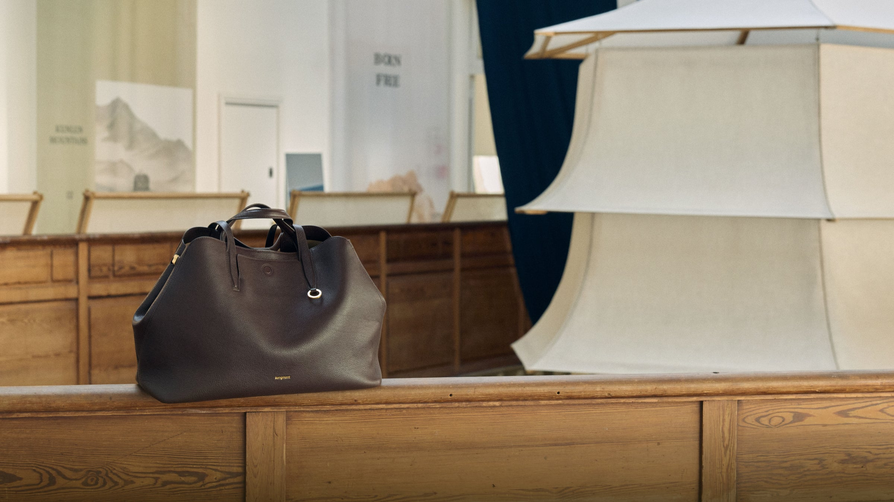

让陌生人记住
从“看过一个中国品牌”推进到“记住 Songmont 的人、地方和手艺”。

我为 Songmont 设计一条跨市场传播主线：从山西真实手艺人的一道工序出发，在巴黎展览与海外内容中讲清品牌是谁，再把国际声量带回中国社媒与双 11。
Songmont 已有巴黎展览这个国际舞台。我的问题是：展览之后，第一次认识它的人能带走什么清晰的品牌记忆？
“东方美学”能建立氛围，却很容易停留在一个宽泛印象。对海外观众，品牌需要一个不必先懂中国文化也能进入的具体故事；对中国顾客，它还需要让漂亮的设计与真实的制作过程连起来。
于是我没有再造一个抽象文化符号，而是选择一件人人都能看懂的事：一双手怎样完成一道针脚，谁在做，为什么这样做。
从“看过一个中国品牌”推进到“记住 Songmont 的人、地方和手艺”。
把巴黎产生的内容带回国内，帮助已被设计吸引的人理解作品背后的真实细节。
海外传播的关键不是把中文口号译成英文，而是找到一个跨文化也能被理解的故事单位。
品牌给出的真实起点：Songmont 的第一只包来自母亲为女儿动手制作；山西里望村的姥姥团队也是品牌故事的一部分，参与手作与维修。这里有具体的人、动作和地方。
我的创意选择：每一章聚焦一位有真实工序记录的手艺人、一项可展示的做法、一件与之相关的作品。海外观众先看见动作，再认识这段来自山西的故事。
让手艺人以自己的名字和劳动进入画面，而不是成为模糊的“东方匠人”背景。
用可拍、可讲、可验证的工序解释设计细节，让针脚成为品牌的视觉线索。
同一条线从山西走到巴黎，再回到中国顾客的日常；每个市场看到同一故事的不同一面。
核心创意不是“姥姥去了巴黎”，而是：
一针手艺，如何被世界看见。
“见针·万荣”是首章构想：巴黎展览给故事一个舞台，短片与双语内容让它走出展厅。
一针很小。
它却能把一个人的手艺，
带到很远的地方。
镜头从手与工序开始，转入巴黎展览中的作品，最后停在背包人的真实生活里。产品始终在画面中，手艺也始终有具体的人。
她的名字，
在这一针里。
See the hands behind the design.
展签呈现人物、地点、所做工序与对应作品；英文先说清动作，再展开文化背景。
一组短内容从三个角度连续发布：认识手艺人，看她完成一道工序，再回到这道工序如何服务于包的设计。每条都能单独传播，也能导向全球官网的完整故事。
同一创意跨市场延展，但每个触点承担不同任务：现场建立记忆，海外内容解释品牌，国内传播承接兴趣。
把人物影像、工序和作品放在同一个现场；向当地时尚与文化媒体提供可讲述的品牌人物与视觉素材。
任务：被记住、被报道
用英文短片、社媒切片和全球官网故事页延续讨论；从“好看”引导到“这个品牌为何这样设计”。
任务：被理解、被主动搜索
小红书讲人和幕后，商品页展示与具体作品相关的工艺信息；双 11 与电商团队的常规机制配合。
任务：被深入了解、被考虑
不把巴黎曝光直接算成销售。先看它有没有留下品牌记忆，再看内容能否跨市场继续发挥作用。
目标市场的品牌词搜索、相关媒体报道质量、英文内容的完播与分享。
从展览与社媒进入官网的人，是否继续阅读品牌故事并访问相关产品页。
小红书对故事与工艺的搜索、收藏；双 11 期间高意向访问与购买行为，和电商团队共同复盘。
分配顺序是先讲清故事，再集中放大，最后接住兴趣。每 100 元中，55 元用于内容与巴黎传播高点，20 元触达海外新受众，15 元承接中国市场，10 元留给验证与调整。
演示配比，合计 100%。原提案的约 5000 万元是首年预算假设；实际总额需按品牌报价重估。维修与售后履约不计入这张传播预算。
预算分阶段释放。先用英文样片小范围测试：受众能否说清“谁做、如何做、与这只包有什么关系”，是否愿意继续查看产品。看懂且愿意了解，再扩大巴黎现场与海外分发；正式传播后看品牌搜索和产品页访问。若只有曝光，就先修改故事，不急着增加投放。中国商品页同步准备，接住展后兴趣。
创意源于品牌公开信息；图像采用 Songmont 官网巴黎专题影像。